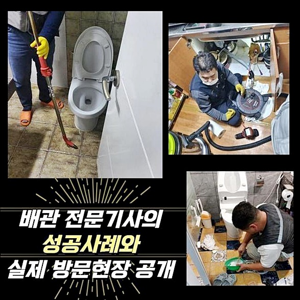
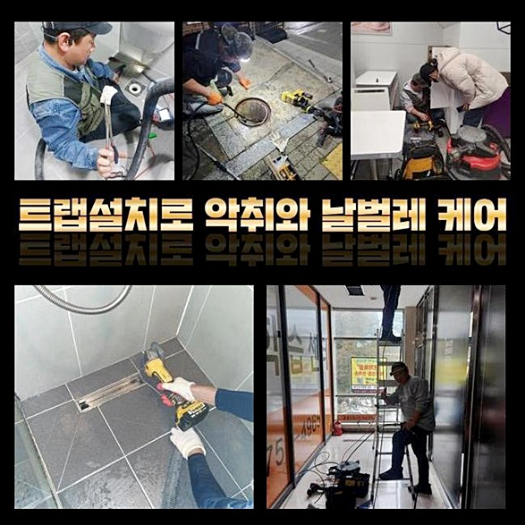
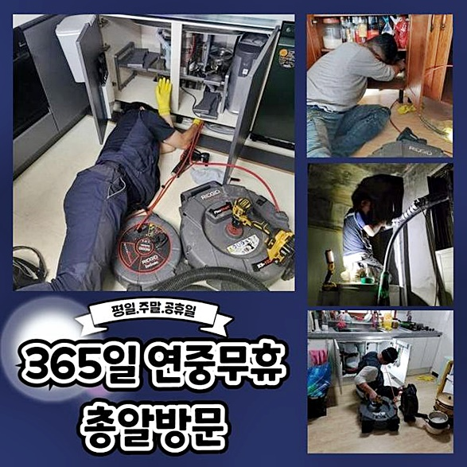
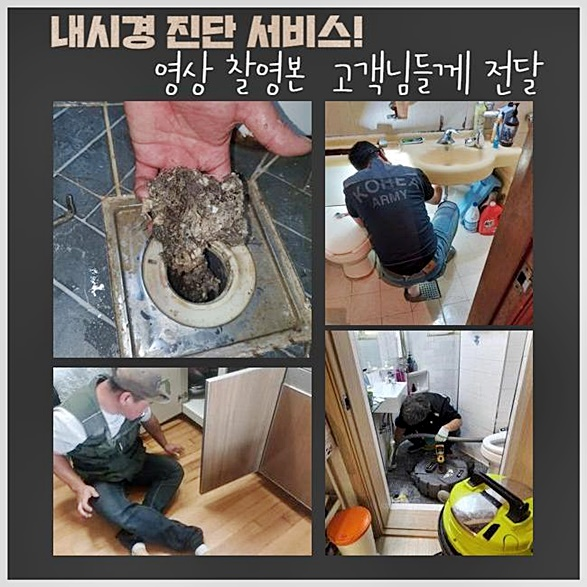
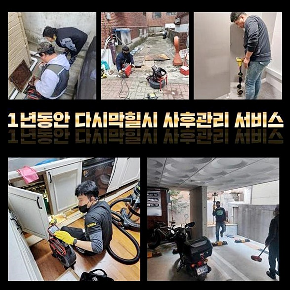
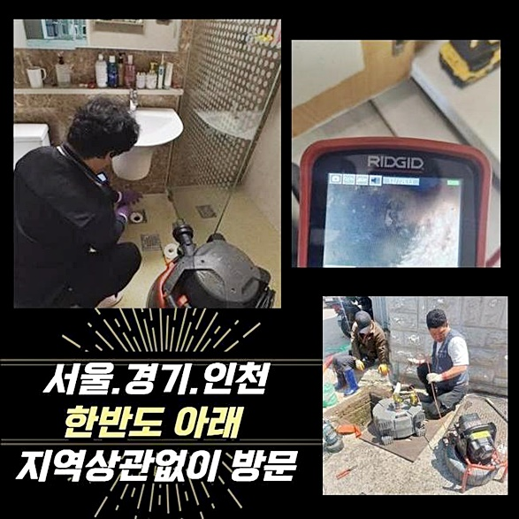
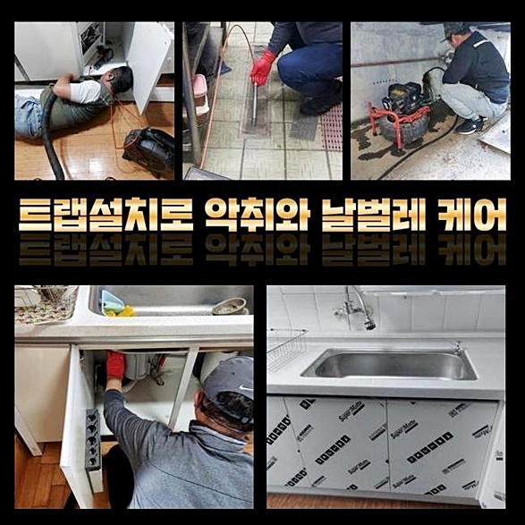

🏠 서대문 합동화장실하수구뚫음 창천동 하수구청소 출장설비
용인시 처인구 배관막힘 전문 시공 후기

📋 작업 개요
- 위치: 용인시 처인구, 수원시 영통구, 화성시 동탄
- 서비스 유형: 배관막힘, 하수구청소, 내시경점검
- 작업 일시:
- 업체명: 하수구수사대 (010-5615-2118)
🔍 문제 상황
서대문 합동화장실하수구뚫음 창천동 하수구청소 출장설비
평범한 일상 가운데에서 배관의 문제가 생겨났던 증험이 존재하셨을 것이라 생각하고 있습니다
일순간 집안의 배관이 물이 유출되는 상황이 되어 파이프 개통을 감행해 나가셨던 기억 또한 알게모르게 존재할 것으로 사료되는데요
배관 안에 이물이 유입하게 된다면 처음 시기엔 문제가 발생하지 않을 수 있겠지만 지속적으로 들어가면 차단이 돼버리죠
화장실을 쓸 수 없는 상황이 되면 생활의 문제가 커질 수밖에 없겠죠
차단이 생겨난 파이프를 고쳐내려고 나뭇가지 등도 삽입해보고 여러 약제 등도 적용해 보았는데 뚫어내지 못했다면 배수구 처치를 도맡는 사람에게 조속히 연락해 수리받으실 것을 권해드립니다
방관은 되레 고장을 좋지 않게 변모시킬 수 있단 걸 무시해 버리시면 추후 더욱 고생할 수 있어요
이번 글에선 배수구 세정작업과 관계된 상식과 더불어 막힘이 생긴 사태 가운데 적절하게 조처하는 내용을 설명드리겠습니다
금번 소개해드릴 장소와 유사한 차단으로 고초를 겪고 있다면 심도있는 처치가 필요해요
안내드릴 처소는 공장 사장님의 촉박한 방문요구에 즉시 내방하였던 데입니다
제조설비 측면에 있는 배관이 막히는 바람에 업무에 어려움이 있었답니다
직접 그 곳을 보니 배관로가 깊이 자리잡고 있었으며 정체가 일어난 처소 또한 상당히 멀었어요 처치가 순탄지 않을 것이라는 점을 예감하였습니다
빠른 해결이 필요했기에 중간 지점의 배관을 관통해보기로 했어요

🔎 원인 분석
💡 전문가 진단: 정밀 진단 장비를 사용하여 슬러지의 고착 여부를 판명하고 타격/세척 작업을 실시했습니다.
물의 이동이 이루어지지 않았으므로 안을 들여다볼 수 없는 상황이었답니다
이에따라 완전한 사태 판단이 난해하므로 내시경cctv를 통하여 내측을 상황을 간파하기로 하였답니다
파이프 안에 쓰레기들이 상당하였는데요 정체는 바로 기름때였어요
직원이 화학 제품을 자주 넣어보았으나 해결되는 모습은 없었다 하시더라고요 배수가 전혀 진행될 수 없을 정도로 안의 찌꺼기들이 점령하고 있었죠
배관카메라를 통해 정확하게 분석해보니 맨홀부근에서 시관로에까지 연결된 부근이 막혀버리는 바람에 물이 역류하였던 것이죠
초기 예측과 차이나게 꽤 많은 지점이 경화된 찌꺼기들로 들어차 있었습니다
여러 물건들을 취급하는 과정에서 발생한 유분으로 이루어진 찌꺼기가 지속 누적될 수밖에 없었어요
문의자분에게 중반부의 하수구를 뚫어내는 게 알맞겠다고 안내하고 차후 진행방안을 알려드린 다음 업무에 들어갔답니다
해당 사항에 대한 동의를 얻고 실내에 존재하는 하수관에서부터 야외로 노출된 시관로에 이르기까지 뚫음을 시행했죠
오염수준이 방대하여 일차적인 업무를 한 뒤엔 인접한 배수시설 또한 도구를 사용해서 처치해야 하죠
이 경우엔 고속분쇄용기기를 가동하여야 되는데요 해당 기기는 머릿부분의 쇠사슬이 회전해나가며 관 내에 정착한 찌꺼기 일체를 파쇄하는 노릇을 하고 있어요
가끔가다가 의뢰인께서 고속으로 돌면서 관에 문제가 생기지 않을까 문의할 때도 있는데요
어설픈 실력을 바탕으로 어설프게 접근하게 된다면 배관의 균열이 나타나기도 하지만 우리와 같이 숙련성이 입증된 인원들에겐 합치되지 않는 다는 걸 말씀드려요
배수관카메라를 통하여 내부 상황을 검진하면서 막힘이 가중된 부분과 까닭을 알아낸 뒤 시공절차에 들어가게 됩니다

🔧 작업 과정
공장내부에서 나온 물속에 각종 쓰레기들이 잔뜩 메우고 있었습니다
분쇄기기를 작동하여 쓰레기들을 없애나가는 걸 호기심있게 쳐다보시더니 묵은 체증이 내려가는 것 같다고 말하셨어요
처리해야 할 부분이 많았지만 굴착부위를 통해서 빈틈없이 청소를 이어나갔답니다
제조시설이 있는 처소에선 기름을 쓸 수밖에 없으며 다양한 동기들로 인해서 기름 배출이 될 수 있기 때문에 관리 시스템이 작동된다고 하여도 막힘을 포함한 여러 문제가 나타나는 것이죠
말끔한 모습으로 현장이 바뀌자 정말 어마어마한 양이라며 흡족해 하시더라고요
해당 지점 전반으로 물이용을 할 수 없는 상황으로 변질된 건 제조공장 바깥의 공간에 자리잡은 파이프에서 정체가 생겨나서였어요
이런 배관차단 문제에 직면하게 된다면 모든 직원에게 불편함을 줍니다 다양한 쓰레기물질들이 겉에서도 보이는 수준으로 상당량 적층을 이루고 있었답니다
장기간 세정과 관련한 업무를 하지 않았다 말하시더라고요
그래서 배수구를 통해 여러 물질들이 흘러들어왔다는 사항을 간파할 수 있었답니다
건축시설이 오래되어서 하수구역시 낡아졌을 가망성이 높습니다
배관이 낡아지는 것도 막힘이 발생할 때 심화될 수 있다는 점을 잊지 말아야 합니다
잔재들이 점층적으로 누적되면 물흐름을 막기 때문에 배수관 벽면에 압력을 가할 수 있고 노후화가 심해진 자리에선 파열이 생길 수가 있습니다
배수관 내부에 있던 노폐물 덩어리들은 플렉스샤프트를 통해서 충분하게 처치 가능했으므로 추가적인 세정작업은 이행할 필요가 없었어요
체인노커의 연속적인 회전을 통해 찌꺼기를 종합적으로 소멸시키는 수순을 실시하였어요
상시적으로 하수관클리닝이 이행되지 않은 장소는 쉬이 막힘이 일어나고 역류증세가 나타날 수도 있죠
물이 올바르게 사라지지 않고 평소때와 차이나는 모습이 발현된다면 늦지 않게 저희와 같은 베테랑에게 의뢰하실 것을 권합니다
한번이라도 역류나 막힘이 나타났다면 날짜가 지나게 되면 악화될 가능성이 높답니다
신속한 뚫음을 시행하는 일도 신경써야겠지만 숙달된 전문인을 수문하는 일도 불가결합니다
충분한 업력을 가졌는지 사전에 살펴보는 게 좋아요
전문적인 실력과 설비 이 두가지를 충족한다면 어떤 난해한 막힘이라도 능히 해낼 수가 있답니다
우리는 온전하게 시공이 실시되도록 고가의 기기들을 이용하고 있어요
뚫음에 적합한 도구들을 쓸수 있게 석션기기를 포함한 전문 기계들을 세팅한 후에 문의자의 공간으로 출장갑니다


✅ 작업 완료
노폐물들을 미는 방책으로 업무를 진행하고 배관전용cctv를 집어 넣고 배관안에 찌꺼기 부스러기들이 잔존하고 있지 않은지를 파악하면서 꼼꼼히 소제해나가고 있어요
이런식으로 공사를 해보시면 노폐물이 고착화되는 상황을 방지할 수 있기에 다시 막혀버리는 문제는 거의 없다고 생각하셔도 무방합니다
갖가지 기름때와 찌꺼기가 남김없이 소멸되었답니다
막힘이나 역류가 나타나지 않았어도 주기적으로 예방하는 업무를 신청할 수 있습니다
고객님이 요청하신 시간대에 정확히 진단 및 방문을 해드리며 토요일에도 정상적으로 일하고 있으니 주저하지 마시고 문의해 주세요
방임하지 말고 장애가 일어났을 때 바로 조치하시는 걸 권장합니다




⚠️ 하수구 배관 막힘 예방 및 관리 가이드
- ✅ 머리카락, 비닐, 물티슈 등 물에 분해되지 않는 이물질은 절대 흘려보내지 마세요.
- ✅ 기름기 많은 식기는 설거지 전 키친타올로 먼저 기름때를 닦아내세요.
- ✅ 주기적으로 배수구에 뜨거운 물을 가득 부어주어 유지방 고착을 방지하세요.
- ✅ 작업 후 1년 이내 재발 시 무상 A/S 보증 서비스를 제공합니다.
💡 핵심 정리
- 확실한 장비 작업(내시경 점검 및 샤프트 스케일링)으로 원인을 뿌리 뽑습니다.
- 작업 후 1년 이내에 동일한 부위 재발 시 100% 무상 A/S 서비스를 보장합니다.
- 서울 · 경기 · 인천 전 지역에 24시간 언제든 긴급 출동할 수 있도록 항시 대기 중입니다.
❓ 자주 묻는 질문 (FAQ)
🚨 용인시 처인구 배관막힘 문제로 고민이신가요?
정확한 원인 진단과 확실한 시공으로 재발 없는 해결을 약속드립니다.
24시간 긴급 출동 | 서울 · 경기 · 인천 전지역 | 1년 내 재발 시 무상 A/S